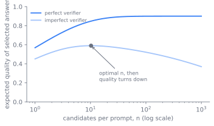

推理时扩展范式
第 14 章 中的训练只花一次算力，把推理能力固化进权重。本章讲的是另一根杠杆：权重冻结之后，在推理时多花算力，让一个固定模型去回答更难的问题。读完这一章，你能讲清楚为什么重复采样买到的是覆盖率而不是答案，为什么串行修订和并行搜索是测试时算力的两种不同形态、各有各最合适的场景，计算最优的分配怎样按问题难度去调度预算，以及当挑答案的那个东西并不完美时，整条曲线为什么会掉头向下。
训练之后只剩的一个旋钮
训练好的模型在推理时只剩一个旋钮：每道题花多少算力。最便宜的答案是一次贪心解码。本章要回答的是，多花算力你能换来什么，是一千个样本而不是一个、是一条长长的审慎思路而不是短的，以及这笔开销相比一开始就训练一个更大的模型，到底值不值。
这个问题之所以成立，是因为两笔开销可以互换。一个更大的模型训练成本更高，而且此后每个词元都更贵。推理时的算力在训练时一分不花，只在需要的题目上花，而这些题目正是难题长尾里的大头，简单题占了多数，却一分都不用花。小模型加上额外的推理算力，要是能在难题上追平大模型，第 16 章 里的服务经济学就会改写：你把成本从一个每次请求都得付的固定资产，挪成了一个只在题目值得时才付的变量。
测试时算力的两种形态
测试时算力有两种形态，这个区分组织起了整章。并行扩展抽取许多独立样本，再把它们组合起来。串行扩展把算力花在一条生长的链上，每一步都以上一步为条件，对同一条思路反复修订或延伸。Snell 等人的框架把这两者描述为：串行是一步步改进提议分布，并行是针对某个验证器去搜索。核心的经验结论是两者谁也不占绝对上风，哪种形态更好，取决于具体的题目 (Snell et al. 2024)。
串行用的是第二种花预算的方式。它不去做 次独立的尝试，而是让模型在一条轨迹上一直想下去，算力买的是长度和修订，而不是广度。第 14 章 里的推理模型天生就这么做：一条长长的思维链，本身就是串行的测试时算力，而那一章的 RL 正是教会了模型去产出它。s1 把这根杠杆展示得最为直白，叫预算强制（budget forcing），这是一种解码时的介入，用来控制模型思考多久：压住结束思考的词元，再续上一个「Wait」推着模型继续，或者强制终止以封住开销 (Muennighoff et al. 2025)。这样拉长思路，能让模型抓到并修正自己的错误，准确率就随着被强制的预算一起上升。串行和并行还可以组合：你可以抽出好几条长链，再从中挑一条，Snell 等人研究的正是这个二维的预算 (Snell et al. 2024)。图 15.1 摆出这两种形态，以及选择器在哪里决定覆盖率能否变成准确率。
flowchart TB
P[问题] --> PAR["并行: k 个独立样本"]
P --> SEQ["串行: 一条生长的链"]
PAR --> COV[覆盖率随 k 上升]
COV --> SEL{选择器}
SEL -->|验证器| ACC[覆盖率变成准确率]
SEL -->|多数投票或奖励模型| PLAT[数百个样本后趋于平台]
SEQ --> REV[原地修订或延伸]
REV --> BUD[预算强制控制长度]覆盖率不是准确率
并行这条线，从能想到的最简单的方法讲起。抽 个样本，看其中至少有一个把题目解对的占多大比例。Brown 等人把这叫覆盖率，它是任何选择规则所能从这堆样本里榨出的上限 (Brown et al. 2024)。覆盖率随 在四个数量级上平滑上升，用一条指数化的幂律可以拟合得很好，这正是 第 3 章 里训练扩展律在推理时的对应物 (Brown et al. 2024)。关键词是覆盖率，不是准确率。样本里确实存在一个对的，但这和知道它是哪一个并不是一回事。
这道缺口，就是并行扩展的设计难题。要把覆盖率变成一个能用的答案，你需要一个选择器，而难处恰恰落在选择器上。题目带有自动验证器时，也就是 第 14 章 里那些单元测试、答案检查器和证明检查器，选择就不花钱：对每个样本跑一遍验证器，留一个通过的。覆盖率就直接变成准确率，这正是重复采样在代码和形式数学上收益最大的原因。没有自动验证器时，你就退回到一个启发式选择器：对答案做多数投票，或者用一个训练好的奖励模型给每个样本打分。这些办法管用到一定程度就停了：Brown 等人报告说，即便覆盖率还在往上爬，多数投票和奖励模型一旦过了几百个样本就不再扩展，因为选择器没办法把那个罕见的对答案，从一堆自信满满的错答案里分辨出来 (Brown et al. 2024)。整章都系在这一道缺口上：正确答案存在，和系统能找到它，是两码事。图 15.2 把这道缺口画了出来：覆盖率随 平滑上升，验证器几乎能把它全部兑现，而启发式选择器早期跟着覆盖率走，随后就停在远低于它的地方。

从技巧到一条算力轴
这些方法比这套范式更古老。自一致性，也就是采样好几条链再对最终答案做多数投票，就是带多数选择器的并行扩展，它早在推理模型时代之前就有了 (Wang et al. 2022)。对着奖励模型做 best-of-，则是带一个学到的选择器的并行扩展。过程奖励模型在「Let's Verify Step by Step」里训练出来，在 第 14 章 里当作稠密验证器使用，正是靠它，针对部分链的验证器引导搜索才跑得起来：它给每一步打分，而不只给最终答案打分，于是搜索可以提前剪枝 (Lightman et al. 2023)。2024 年变的是看待方式：这些不再只是技巧，而成了一条有自己扩展律的算力轴。
Brown 等人立下了并行这条律：覆盖率是样本数的一条平滑、可预测的函数，而它的收益有多大，强烈取决于有没有验证器 (Brown et al. 2024)。Snell 等人接着追问分配的问题：给定一个固定的测试时预算，你该怎么把它切开，是更多的并行样本、更多的串行修订，还是更深的验证器搜索 (Snell et al. 2024)。
按难度调度预算
Snell 等人证明，答案取决于题目有多难。简单题受益于对一个已经不错的首猜做串行精修，难题则受益于更宽的并行搜索。按难度去调度预算，也就是他们的计算最优策略，在效率上以四倍以上胜过 best-of- 基线；而在小模型已经有了一点立足之地的题目上，一个 FLOPs 相当、外加额外测试时算力的小模型，胜过了一个约十四倍大的模型 (Snell et al. 2024)。这就是本章那根约束箭头的量化版：推理算力替代参数。图 15.3 追踪预算如何按难度被调度。
flowchart TB
B[固定的测试时预算] --> D{估计的问题难度}
D -->|容易| SEQ[对不错首猜的串行精修]
D -->|困难| PAR[更宽的并行搜索]
D -->|够不着| ZERO["零覆盖率: 怎么花都没用"]
SEQ --> WIN[计算最优以四倍以上胜过 best-of-n]
PAR --> WIN
WIN --> SUB[小模型加算力追平十四倍大的模型]
ZERO --> UP[只有更强的模型或更好的训练才管用]更少数据，更多推理
s1 和 LIMO 磨利了另一条边。s1 只在约一千条精挑细选的推理轨迹上做了监督微调，再在测试时用预算强制做扩展，就达到了不错的竞赛数学成绩 (Muennighoff et al. 2025)。LIMO 用几百个例子把「少即是多」说得更明白：当一个底模型在预训练里已经编码了相应的知识，少量高质量的示范就足以引出推理，繁重的活儿便转移到了推理阶段 (Ye et al. 2025)。两者指向同一个方向：能力也许本就潜伏在权重里，而测试时算力是把它唤出来的办法。这接上了 第 14 章 里那个有争议的问题，即 RL 究竟是教会了新的推理，还是激发了本就存在的东西，只是现在从推理这一侧来看。

调大下面代码里的 gameable（被有缺陷的选择器误判为高于某个正确样本的错误样本占比），你会看到不完美选择器的曲线更早达峰、随后下落，而覆盖率和完美验证器始终不掉头。
import numpy as np
import matplotlib.pyplot as plt
rng = np.random.default_rng(0)
p, gameable, noise, trials, ks = 0.3, 0.05, 0.4, 4000, range(1, 65)
cov, heuristic = [], []
for k in ks:
correct = rng.random((trials, k)) < p # which samples are right
confident_wrong = (~correct) & (rng.random((trials, k)) < gameable)
base = np.where(confident_wrong, 1.5, np.where(correct, 1.0, 0.0))
score = base + rng.normal(0, noise, (trials, k)) # selector score, noisy
cov.append(np.mean(correct.any(axis=1))) # a right answer exists
picked = score.argmax(axis=1) # selector keeps top score
heuristic.append(np.mean(correct[np.arange(trials), picked]))
plt.plot(list(ks), cov, label="coverage / perfect verifier")
plt.plot(list(ks), heuristic, label=f"imperfect selector (gameable={gameable})")
plt.xlabel("samples k"); plt.ylabel("accuracy"); plt.legend(); plt.show()
print("best heuristic k:", list(ks)[int(np.argmax(heuristic))])
一组平衡及其拐点
这套范式是一组平衡，每一组都有一个拐点。
- 并行与串行。 并行采样可以放肆地并发、对延迟友好，你能一次解码 个样本，但它需要一个选择器，还会在冗余的近重复样本上浪费算力。串行修订在首猜已经接近的题目上把算力用得更省，但它生来就是串行的，得付出完整的延迟。Snell 等人表明，正确的混合比例随难度而变，不是一个常数 (Snell et al. 2024)。
- 覆盖率与选择。 样本越多，覆盖率总会越高，但实际达到的准确率被选择器封顶。有验证器时，上限就是覆盖率的天花板；没有验证器时，上限落在多数投票或奖励模型趋于平台的地方。越过那个点再花钱，什么都买不到。
- 测试时算力与模型规模。 额外的推理可以在难题长尾上替代参数，把成本从固定的训练加服务资产，挪到按题计费的变量上。但这种替代有它适用的范围：当小模型已经有了非零的覆盖率，它才奏效；碰到小模型再怎么尝试都解不出的题目，它就失灵，那时只有更强的模型或更好的训练才管用。
- 数据效率与算力。 s1 和 LIMO 用训练数据去换测试时算力，靠一个极小的监督微调集加上推理扩展，把潜在能力激发出来 (Muennighoff et al. 2025; Ye et al. 2025)。这个赌注只有在底模型已经编码了相应领域时才成立；面对真正全新的能力，没有什么潜伏的东西可供激发。
- 延迟与成本对准确率。 这里的每种方法都会成倍放大每道题的算力，串行方法还会放大延迟。产品上的决定，就是哪些题值得这笔开销，而这恰恰是计算最优分配所形式化的东西。
把它建起来
它运转的核心很小。一个并行扩展器就是一个采样循环加一个选择器：在足够高的温度下抽出 个补全以保证多样性，然后要么跑验证器留一个通过的，要么取多数投票，要么用奖励模型打分取最好的。验证器这条路才是能扩展的那条，所以工程力气要花在 第 14 章 所指的地方，去把检查器做得既可靠又覆盖面广。一个串行扩展器是一段受控的解码：侦测模型何时试图停下，再决定让不让它停，这就是预算强制的介入，压住停止词元并注入一个续写提示来延伸，或者强制给出最终答案来封顶。
# Parallel scaling: coverage is free, selection is the hard part.
def best_of_k(prompt, k, select):
samples = [model.sample(prompt, temperature=0.8) for _ in range(k)]
return select(samples) # verifier > reward model > majority vote
失败模式从设计本身推得出来。用一个不完美的验证器做选择是最核心的一个：更多样本给了有缺陷的选择器更多机会去挑一个自信的错答案，也就是争议框里点名的推理时奖励黑客，于是曲线变平或下凹，多花的算力就是浪费的算力。覆盖率没有选择器是与之相关的陷阱：正确答案可证地就在这堆样本里，系统却仍然返回了一个错的，看起来像模型出错，其实是选择出错。串行的过度思考是第三个：把预算强制推过有用的那个点，模型会把一个正确答案疑神疑鬼地改成错的，所以被强制的预算本身也有一个拐点。还有一种替代会无声地失败，那是在覆盖率为零的题目上，再多的测试时算力也帮不上忙，因为没有一个样本是对的，唯一的修法在上游，得动模型本身。
最后用能力、效率、信任这三面镜子收束本章。测试时扩展是一根能力杠杆，不必重训，就把一个冻结的模型在难题长尾上变得更强。它是一根效率杠杆，把成本从固定资产挪到那些值得花的题目上，受上面那些服务价格的支配。它也是一处信任隐患，因为它的全部收益都骑在选择器上，一个你不信任的选择器，会把更多算力转成更多自信的错答案。在 第 14 章 里封住训练回路的那个验证器质量，在这里同样封住推理回路：让 RL 安全的那个基准真值，正是让测试时扩展划算的那个东西。
延伸阅读
- Brown et al., "Large Language Monkeys: Scaling Inference Compute with Repeated Sampling," 2024. arXiv:2407.21787
- Snell et al., "Scaling LLM Test-Time Compute Optimally can be More Effective than Scaling Model Parameters," 2024. arXiv:2408.03314
- Muennighoff et al., "s1: Simple test-time scaling," 2025. arXiv:2501.19393
- Ye et al., "LIMO: Less is More for Reasoning," 2025. arXiv:2502.03387
- Wang et al., "Self-Consistency Improves Chain of Thought Reasoning in Language Models," 2022. arXiv:2203.11171
- Lightman et al., "Let's Verify Step by Step" (process reward models for verifier-guided search), 2023. arXiv:2305.20050